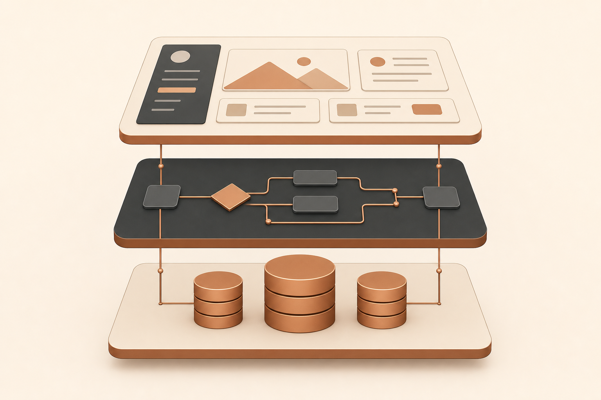
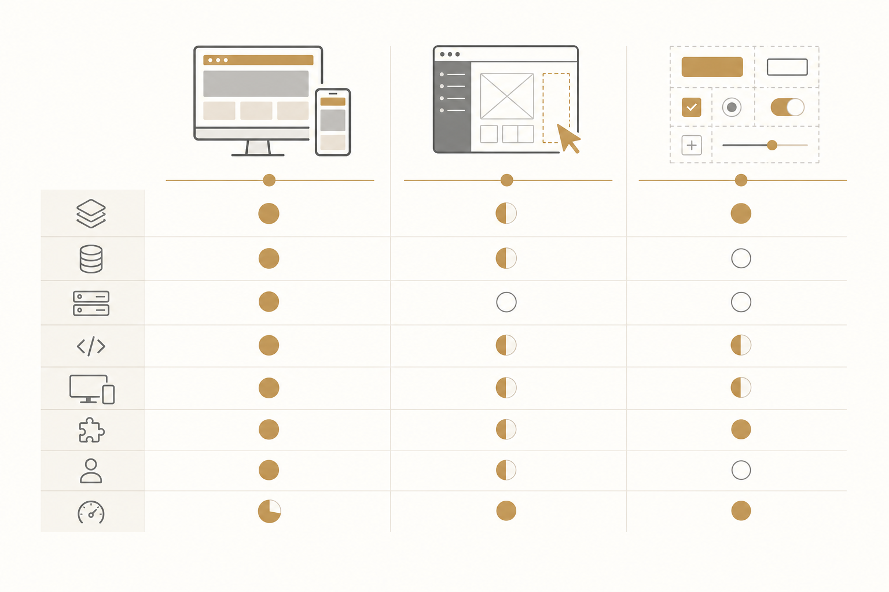
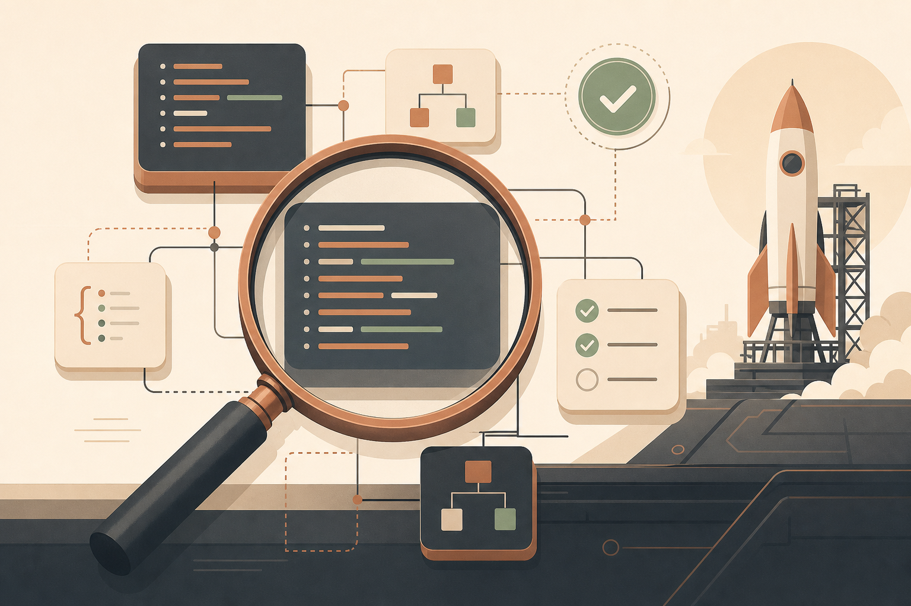

לפני שנתיים, "לבנות אתר" עוד היה תהליך של שבועות — בחירת platform, עיצוב mockups, פיתוח, deployment. ב-2026 — אותו אתר יכול לקום ב-15 דקות מ-prompt אחד. אבל הבחירה במה להשתמש כבר לא טריוויאלית, ושלושת השמות שאי אפשר להתעלם מהם השנה הם Lovable, Bolt.new, ו-v0 של Vercel.
שלושתם הופכים תיאור בטקסט לקוד עובד, אבל הם פותרים בעיות שונות לחלוטין. הציטוט שתפסתי מ-Till Freitag, שותף של monday.com, מסכם את זה ביעילות:
"Lovable לאפליקציות full-stack עם בסיסי נתונים, Bolt לפרוטוטיפים מהירים, v0 לרכיבי UI נקיים — רוב הפרויקטים מרוויחים משילוב."
נצלול לכל אחד.
קטגוריה: בונה אפליקציות מלא
Tech stack: React + Vite + Tailwind

יזמים שצריכים MVP עם מסד נתונים והרשאות בזמן מינימלי. צוותים שבונים אתרים ואפליקציות מקצועיות.
קטגוריה: פרוטוטיפ Full-Stack
Tech stack: React, Next.js, Svelte, Vue ועוד
ולידציה מהירה של רעיון — pivot, pitch, או POC. מפתחים שצריכים גמישות framework. צוותים שצריכים להראות concept תוך 30 דקות.
קטגוריה: מחולל רכיבי UI
Tech stack: React + Next.js + Tailwind
מפתחים ומעצבים שבונים רכיבי UI לתוך פרויקטים קיימים של Next.js. צוותים שמייצרים מערכת עיצוב. ארגונים שכבר ב-Vercel ecosystem.

שלושת הכלים קיבלו אותו prompt: "בנה טופס יצירת קשר עם ולידציה ששומר נתונים למסד נתונים."
| היבט | Lovable | Bolt.new | v0 |
|---|---|---|---|
| איכות UI | ⭐⭐⭐⭐ נקי, רספונסיבי | ⭐⭐⭐ פונקציונלי | ⭐⭐⭐⭐⭐ pixel-perfect |
| ולידציה | ✅ Zod + react-hook-form | ✅ בסיסית | ✅ Zod + react-hook-form |
| מסד נתונים | ✅ Supabase אוטומטי | ✅ משולב | ❌ הגדרה ידנית |
| Deployment | ✅ קליק | ✅ קליק | ✅ דרך Vercel |
| זמן נדרש | ~10 דק׳ | ~5 דק׳ | ~15 דק׳ (+ backend) |
| מסלול | Lovable | Bolt.new | v0 |
|---|---|---|---|
| חינם | 5 credits/יום | tokens יומיים | 7 הודעות/יום, $5/חודש credits |
| Pro | מ-$20/חודש | מ-$20/חודש | $20/חודש |
| Team | מ-$50/חודש | מ-$53/חודש | מ-$30/חודש |
| מודל חיוב | credit-based | token-based | credit-based |
Lovable — אם:
Bolt.new — אם:
v0 — אם:
הקומבינציה המנצחת: v0 לרכיבים בודדים → Lovable לארכיטקטורת האפליקציה הכוללת → Claude Code לליטוש production.

ללא קשר לכלי שתבחרי, קוד שנוצר ב-AI דורש סקירה מקצועית לפני השקה. בדיקות אבטחה, אופטימיזציית ביצועים, והערכת maintainability — אלה לא רשות. הם הכרח לפני שהקוד עולה ל-production.
הכלים האלה משנים את החוקים של איך בונים אתרים — אבל לא משנים את החוקים של איך בודקים אותם.
מקור המאמר: Lovable vs. Bolt vs. v0 – Which AI Web Builder Is Right for You? מאת Malte Lensch, פורסם 24.02.2026.